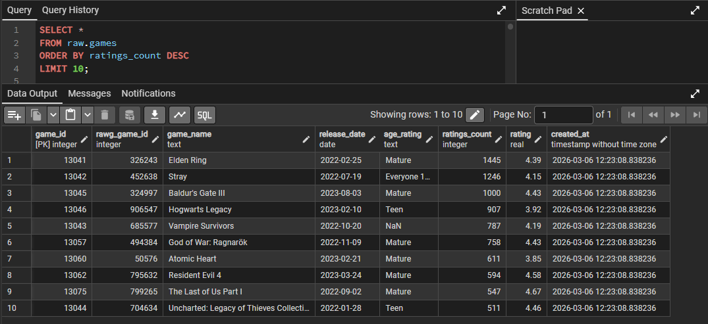

ETL Games Pipeline
This project is a Python ETL pipeline that extracts video game data from the RAWG API, transforms and normalises it into relational tables, loads it into PostgreSQL, and saves JSON snapshots for offline analysis. The goal was to build a complete, automated data pipeline from a live API to a structured database — handling real-world challenges like nested JSON, many-to-many relationships, API rate limiting, and duplicate prevention.
Pipeline Overview
The pipeline collects games released between 2022 and 2024 across 7 parent platforms: PC, PlayStation, Xbox, iOS, Android, Nintendo, and Web. For each platform, up to 400 games are retrieved in pages of 40, ordered by ratings count. Data is extracted, flattened from nested API responses, and inserted into PostgreSQL across three layers: core entities, lookup tables, and many-to-many bridge tables.

Extract: RAWG API
Each API call fetches a page of game results filtered by date range and platform. The pipeline paginates automatically, moving to the next page until the target count is reached or no further results are returned.
To respect rate limits, the pipeline pauses 3 seconds between every call and sleeps for 10 minutes after every 50 calls. Failed requests are caught and logged without crashing the pipeline, and every successful call prints a confirmation to the console.
Transform: Flattening Nested Data
API responses return deeply nested JSON — each game object contains arrays of genres, platforms,
ratings, and ESRB data. pd.json_normalize() is used to flatten these structures into DataFrames.
Columns are renamed to match the database schema, missing fields are filled with None,
and duplicates are removed before inserting.
Bridge tables are built by merging the flattened genre and platform records with database-assigned IDs
retrieved via pd.read_sql(), ensuring referential integrity across all tables.
Database Schema
Data is stored in a raw schema in PostgreSQL across 5 tables.
The many-to-many relationships between games, genres, and platforms are managed through two dedicated bridge tables.

raw.games
| Column | Type | Notes |
|---|---|---|
| game_id | SERIAL | Primary key, auto-generated |
| rawg_game_id | INT UNIQUE | Original ID from RAWG API |
| game_name | TEXT | Title of the game |
| release_date | DATE | Official release date |
| age_rating | TEXT | ESRB rating (e.g. Mature, Teen) |
| ratings_count | INT | Number of user ratings on RAWG |
| rating | REAL | Average user rating |
| created_at | TIMESTAMP | Row insertion timestamp |
raw.genres
| Column | Type | Notes |
|---|---|---|
| genre_id | SERIAL | Primary key, auto-generated |
| rawg_genre_id | INT UNIQUE | Original ID from RAWG API |
| genre_name | TEXT | e.g. Action, RPG, Strategy |
| created_at | TIMESTAMP | Row insertion timestamp |
raw.platforms
| Column | Type | Notes |
|---|---|---|
| platform_id | SERIAL | Primary key, auto-generated |
| rawg_platform_id | INT UNIQUE | Original ID from RAWG API |
| platform_name | TEXT | e.g. PC, PlayStation 5, iOS |
| created_at | TIMESTAMP | Row insertion timestamp |
raw.bridge_games_genres
| Column | Type | Notes |
|---|---|---|
| game_id | INT | Foreign key → raw.games |
| genre_id | INT | Foreign key → raw.genres |
raw.bridge_platforms_games
| Column | Type | Notes |
|---|---|---|
| game_id | INT | Foreign key → raw.games |
| platform_id | INT | Foreign key → raw.platforms |
Load: PostgreSQL & JSON
Each record is inserted using ON CONFLICT DO NOTHING, making every run idempotent —
safe to re-execute without creating duplicates, even if the pipeline is interrupted and restarted mid-run.
After all inserts, the connection is committed and closed cleanly.
In parallel, all collected records are saved as local JSON snapshots:
games_raw.json, genres_raw.json, platforms_raw.json,
bridge_games_genres.json, and bridge_platforms_games.json.
These allow offline analysis and act as a backup independent of the database.

Conclusion
This project shows an entire ETL process created from scratch. It follows the whole data engineering process: authenticating to an external API, dealing with paginated and nested JSON data, normalizing data to a relational format, dealing with many-to-many relationships via bridge tables, and loading data into PostgreSQL with conflict-free inserts. The JSON snapshots are an additional layer of data availability for analysis without needing a database connection.
Data source
RAWG Video Games Database API — a free community-built video game database covering 500,000+ games.